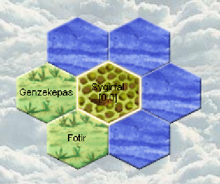

Home of the Aquarian Tutorial!
Aquarian: Runde 1
 Read moreAquarians: Runde 2
 Read more
Read more
Aquarians: Runde 3
 Read more
Read more
Aquarians: Runde 4
We found a new island! Read more
Read more
Aquarians: Runde 5
No visits from potential neighbors.Discovery of close neighbors!
Meeting with a tribe from the new island! Read more